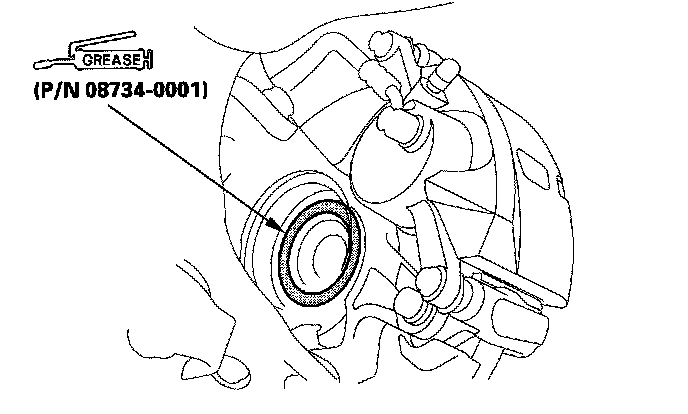
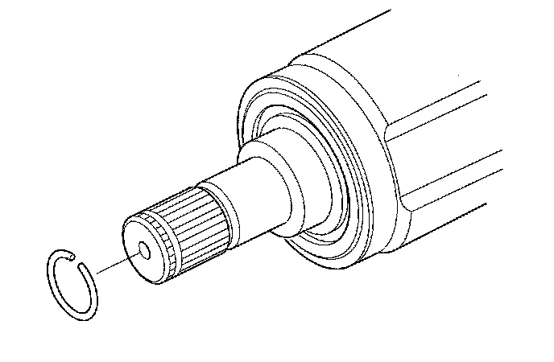
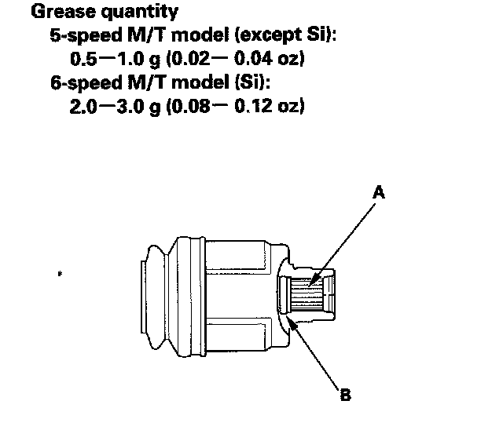
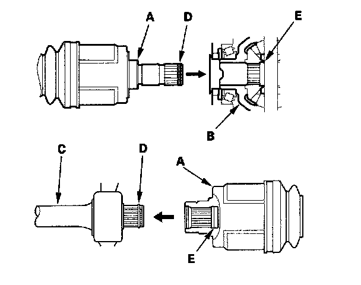
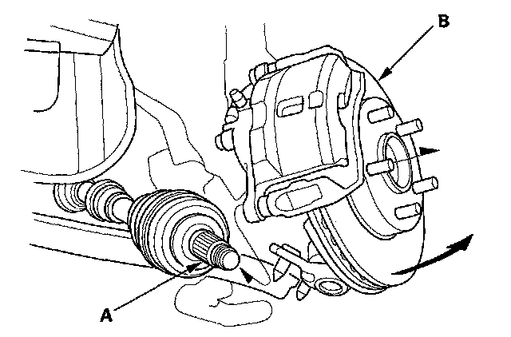
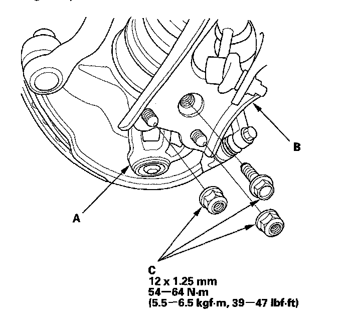
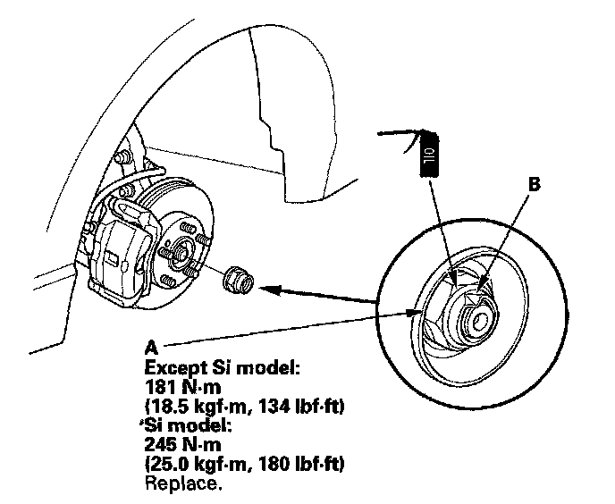

Driveshaft Installation
Driveshaft InstallationNOTE: Before starting installation, make sure the mating surfaces of the joint and the splined section are not dusty or dirty.
1. Apply about 5 g (0.18 oz) moly 60 paste (P/N 08734-0001) to the contact area of the outboard joint and the front wheel bearing.
NOTE: The paste helps to prevent noise and vibration.

2. Install a new set ring onto the set ring groove of the driveshaft.

3. M/T model: Apply specified grease to the whole splined surface (A) of the right driveshaft. After applying grease, remove the grease from the splined grooves at intervals of 2-3 splines and from the set ring groove (B) so that air can bleed from the intermediate shaft.

4. Clean the areas where the driveshaft contacts the differential thoroughly with solvent or brake cleaner, and dry with compressed air.
NOTE: Do not wash the rubber parts with solvent.
5. Insert the inboard end (A) of the driveshaft into the differential (B) or intermediate shaft (C) until the set ring (D) locks in the groove (E).
NOTE: Insert the driveshaft horizontally to prevent damaging the differential oil seal.

6. Install the outboard joint (A) into the front hub (B).

7. Install the knuckle (A) onto the lower arm (B). Tighten the nuts and bolt (C) to the lower torque specification to properly seat the knuckle to the lower arm. Then tighten the nuts and bolt to the higher specification.

8. Apply a small amount of engine oil to the seating surface of the new spindle nut (A).

9. Install a new spindle nut, then tighten the nut. After tightening, use a drift to stake the spindle nut shoulder (B) against the driveshaft.
10. Clean the mating surfaces of the brake discs and the front wheels, then install the front wheels.
11. Turn the front wheels by hand, and make sure there is no interference between the driveshaft and surrounding parts.
12. Refill the transmission with the recommended transmission fluid.
13. Lower the vehicle on the lift.
14. Check the front wheel alignment, and adjust it if necessary.
15. Test-drive the vehicle.